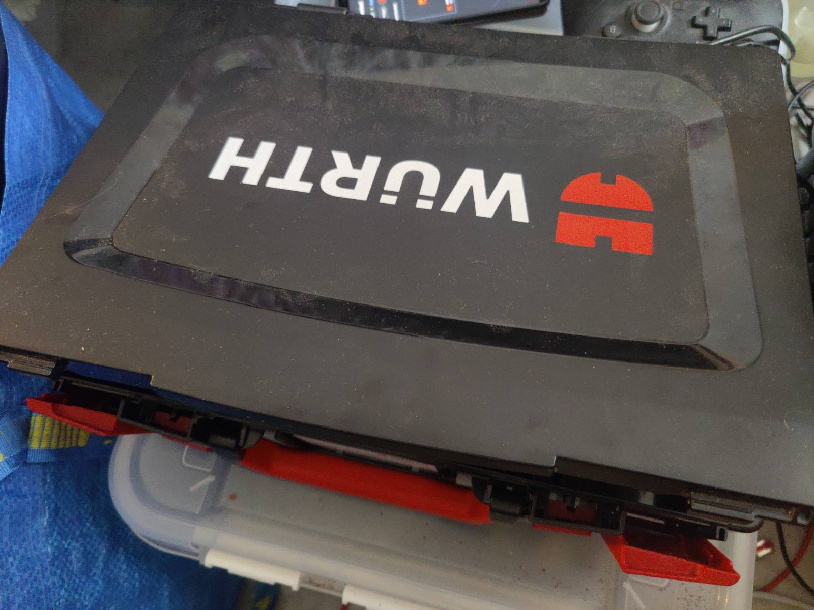
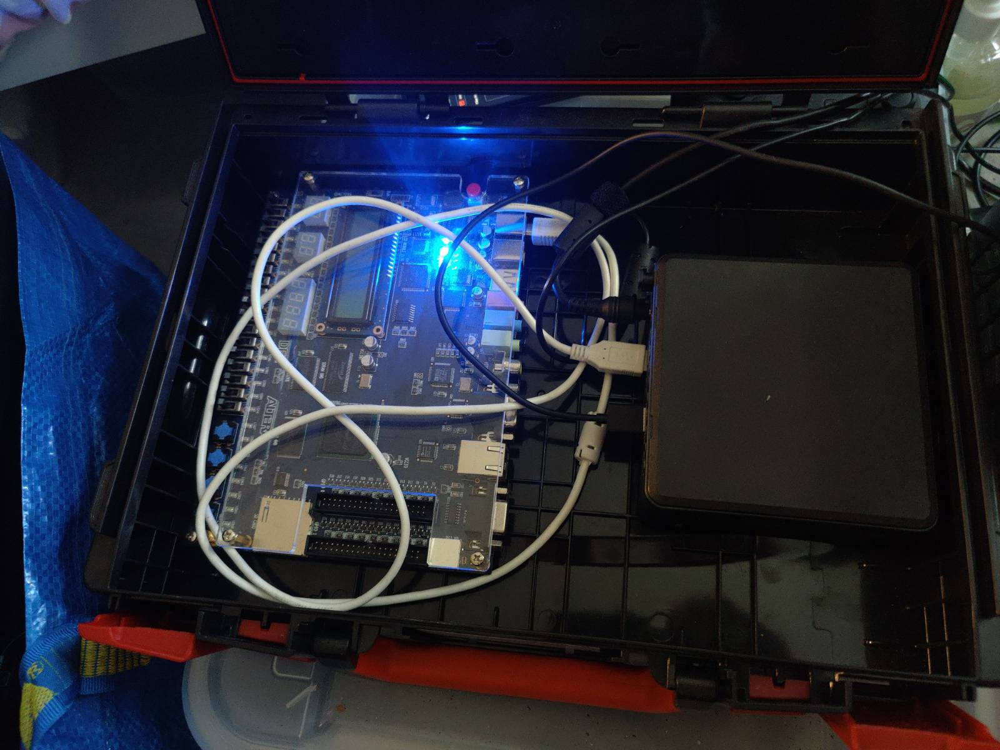
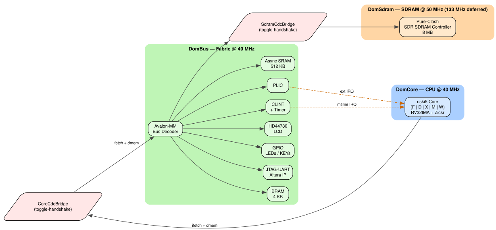
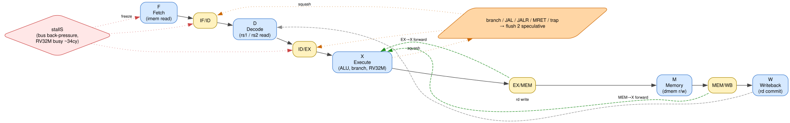
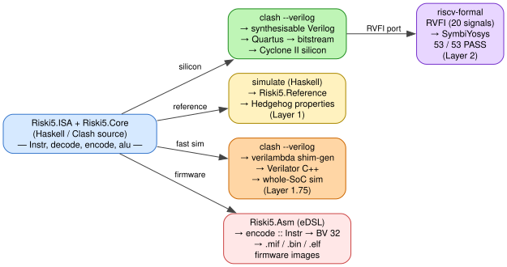

Mika Tammi
Helsinki Functional Programming meetup 2026-05-05
A RISC-V processor written in Clash.
Clash compiles a subset of Haskell to synthesisable Verilog.
https://github.com/purefunsolutions/riski5
https://github.com/purefunsolutions/riski5-helsinki-functional-programming-meetup-presentation
alterade2-flake — Quartus II 13.0sp1 +
USB-Blaster on NixOSverilambda — Haskell-Verilator
bindings, type-preservingriski5 — the RISC-V core (today’s main
subject)In another terminal, before continuing:
Uploads the kernel + DTB over JTAG-Avalon-Master and starts booting Linux on the DE2 in the background while the rest of the deck plays.


alterade2-flake — Nix flake packaging
Altera Quartus II 13.0sp1 (the last version that supports Cyclone II)
and the USB-Blaster JTAG cable as a NixOS module.
A blinking-LED design was running on the physical DE2 within two hours of taking it out of the box and plugging it into my computer.
verilambda — Haskell-Verilator
bindings, type-preserving (HKD ports + OverloadedLabels),
no Template Haskell. Built because every existing option degraded Clash
types at the FFI boundary.
riski5 — the RISC-V core, sits on top of those two siblings. Three repos, one workflow, all under Nix.
Phase milestones (dates from the live blog post, not weeks):
mstatus.MPP + bridge
fixes; kernel reaches printkcbrFlush race +
hybrid MUL-via-DSP silicon-only-bug fixes; Linux boots through
BogoMIPS to Mountpoint-cache hash table
entriesA CPU is a tiny state machine. Its state is the program counter (PC), the register file (32 GPRs in RV32), a few CSRs, and memory.
Each clock tick:
mem[PC]addi x1, x2, 5 / lw x3, 0(x4) /
beq …)PC ← PC + 4, then
back to step 1Riski5.Reference literally implements it that way — pure
Haskell, total function, no IO.
Clash compiles a subset of Haskell to synthesisable Verilog.
Signal dom a — a wire in clock domain dom
carrying values of a over timeclash --verilog — emit synthesisable Verilogsimulate — run the same source as plain Haskell-- A single full adder
fullAdder
:: Signal dom (Bit, Bit, Bit)
-> Signal dom (Bit, Bit)
fullAdder = fmap step
where step (a, b, cin) =
(a `xor` b `xor` cin
, (a .&. b) .|. (cin .&. (a `xor` b)))One source. Multiple targets. That’s the thread that runs through this whole project.
RISC-V — an open, modular, royalty-free ISA, started in 2010 at UC Berkeley (Asanović, Patterson, Waterman, Lee) as a clean teaching ISA. First public spec in 2014.
Full RV32IMA + Zicsr + Zifencei + Zbb + M-mode privileged subset:
FENCE.I (no-op without
I-cache; free today)mstatus,
mtvec, mepc, mcause,
mip / mie, MRET; trap entry /
return; CLINT timer + PLIC IRQsMUL, MULH,
MULHSU, MULHU, DIV,
DIVU, REM, REMU (hybrid:
combinational MUL via Cyclone II DSP blocks, iterative DIV/REM)LR.W, SC.W, plus
all nine AMOs:
SWAP / ADD / XOR / AND / OR / MIN / MAX / MINU / MAXU
(.W)min/max/minu/maxu,
etc.) — required by Linux RV32 buildsCan I represent the entire RISC-V instruction set in Haskell’s type system, and use that single definition for the hardware decoder, the assembler, and the encoder?
This is what started the project.
The hypothesis: if widths and operand kinds live in types, every downstream consumer (silicon, simulator, assembler) is a total function and bit-level mistakes become compile errors.
Single source of truth. Three (or more) outputs. No duplication.
Instr ADTFrom Riski5.ISA — every RV32IMA instruction is one
constructor.
data Instr
= Lui Reg (BitVector 20) -- upper-immediate
| Auipc Reg (BitVector 20)
| Addi Reg Reg (Signed 12) -- I-type arithmetic
| Slli Reg Reg (BitVector 5)
| Add Reg Reg Reg -- R-type arithmetic
| Sub Reg Reg Reg
| Bne Reg Reg (Signed 13) -- branches
| Jalr Reg Reg (Signed 12) -- jumps
| Lw Reg Reg (Signed 12) -- loads / stores
| Sw Reg Reg (Signed 12)
| Mul Reg Reg Reg -- RV32M
| LrW Reg Reg -- RV32A: load-reserved
| ScW Reg Reg Reg -- RV32A: store-conditional
| Csrrw Reg Csr Reg -- Zicsr
| Mret -- machine-mode return
| Fence FenceArg FenceArg
-- + ~30 more, each operand width-typedWidths live in types — Signed 12,
BitVector 5, Reg = BitVector 5. A wrong width
is a compile error before the synthesiser sees it.
-- 1. Hardware decoder (Clash, runs on silicon)
decode :: BitVector 32 -> Maybe Instr
-- 2. Software encoder (inverse of decode, also total)
encode :: Instr -> BitVector 32
-- 3. Embedded assembler eDSL (monadic, with labels + pseudo-ops)
blinky :: Asm ()
blinky = do
li t0 0x10000020 -- pseudo-op: lui + addi
loop <- label
sw t1 0 t0
addi t1 t1 1
j loop -- pseudo-op: jal x0, loopEncoder/decoder mirror each other bit-for-bit. The assembler resolves labels in two passes. The first “Hello from Riski5” firmware was written entirely in this Haskell eDSL — no GNU binutils involved.
Moore’s Law in concrete: feature size (viivanleveys) shrinking, transistors per die exploding.
| Year | Process | Chip | Transistors | Peak compute |
|---|---|---|---|---|
| 1971 | 10 µm | Intel 4004 | 2.3 k | 0.09 MIPS |
| 1978 | 3 µm | Intel 8086 | 29 k | 0.33 MIPS |
| 1993 | 800 nm | Intel Pentium | 3.1 M | ~50 MFLOPS |
| 2000 | 180 nm | Intel Pentium 4 (Willamette) | 42 M | ~6 GFLOPS |
| 2004 | 90 nm | Altera Cyclone II — the DE2 | 33 k LE | no FPU |
| 2006 | 65 nm | Intel Core 2 Duo (Conroe) | 291 M | ~48 GFLOPS |
| 2013 | 22 nm | Intel Haswell | 1.4 B | ~490 GFLOPS |
| 2020 | 14 nm | Intel i9-10900KF — my older desktop | ~6 B † | ~2 TFLOPS |
| 2020 | 5 nm | Apple M1 | 16 B | 2.6 TFLOPS |
| 2022 | TSMC 4N | NVIDIA RTX 4090 | 76.3 B | 82.6 TFLOPS |
| 2023 | Intel 7 | Intel i9-14900K — my desktop | ~26 B † | ~3 TFLOPS |
| 2023 | 3 nm | Apple M3 Max — my MacBook Pro | 92 B | 14 TFLOPS |
| 2025 | TSMC 4N | NVIDIA RTX 5090 | 92.2 B | 104.8 TFLOPS |
| 2026 | N3P | Apple M5 Max — current bleeding edge | ~165 B † | ~25 TFLOPS |
| 2026 | 2 nm | TSMC N2 | ramping | — |
Peak compute: FP32 single-precision (CPU AVX or GPU, whichever is higher); old chips show MIPS where no FPU existed. † Intel never officially disclosed transistor counts for these parts; figures are die-area-density estimates. M5 Max disclosure is still pending at the time of writing.
Feature size: 5 000× smaller since 1971. Transistor density: ~10⁷ ×. Peak compute: ~10⁹ ×. riski5 fits comfortably in 22-year-old 90 nm silicon.
A hardware description language (HDL) is not a programming language.
Mental model: your HDL describes a circuit. The simulator pretends to be a clock and watches what wires do. The synthesiser turns the description into actual silicon.
| Type system | Tool support | Ergonomics | |
|---|---|---|---|
| Verilog | Weakest (4-state) | Universal | Spartan |
| SystemVerilog | logic, structs, interfaces, assertions |
Partial outside Synopsys/Cadence | Better |
| VHDL | Strong, verbose | Strong in EU/aerospace | Heavy ceremony |
Verilator — the gold-standard open-source simulator — only speaks Verilog/SystemVerilog. That decided our synthesis target.
We use Clash → Verilog because Verilator was irreplaceable for the test loop.
FF ──── combinational logic ────► FF
↑ (gates, muxes) ↑
│ ← propagation → │
└────── one clock period ─────────┘The slowest combinational cone between two flip-flops sets your maximum clock frequency (fmax).
Add another gate on the critical path → fmax drops.
Every “obvious” optimisation that adds logic depth (wider ALU, more forwarding muxes, deeper decode) has a fmax cost.
A real SoC is not one clock. The DE2 has a 50 MHz oscillator; Cyclone II PLLs synthesise derived clocks at the frequencies and phases each block needs.
riski5 (after the Multi-PLL three-domain split, 2026-05-03) has three independent clock domains, each with its own PLL:
DomBus — bus / fabric, 40
MHzDomCore — CPU core, 40 MHz
today (CPP-tunable, splits from DomBus in a later phase)DomSdram — SDRAM controller,
50 MHz today (chip-rated 133 MHz; DE2 PCB chip-input
timing doesn’t close at 7.5 ns yet)CDC = Clock Domain Crossing. When a signal travels between two asynchronous clock domains, it can be latched mid-transition by the receiver and resolve to a random value — metastability. A CDC bridge sits on the boundary and synchronises every crossing safely, usually via dual-flop synchronisers + a handshake protocol.
riski5 has two:
Riski5.Cdc wraps dualFlipFlopSynchronizer
(the primitive)Riski5.SdramCdcBridge carries Avalon-MM traffic DomBus
↔︎ DomSdramRiski5.CoreCdcBridge does DomCore ↔︎ DomBusClash makes this type-safe:
Signal dom a carries the domain dom as a
phantom type — the compiler rejects accidental cross-domain wires.
Single-cycle (Phase 1) ran into a ~33 MHz plateau in Phase 1E.
Splitting the datapath into a 5-stage pipeline (Phase 2A, 2026-04-21) raised the silicon target to 40 MHz.
F | D | X | M | W
fetch | dec. | exec. | mem. | wb.
↓ ↓ ↓ ↓ ↓
IF/ID ID/EX EX/MEM MEM/WBTrade-off: latency (each instruction takes 5 cycles to retire) and hazards (forwarding paths, stalls, branch flushes).
Phase 1A: BRAM inside the FPGA was the only memory; tiny hand-written assembly programs (the eDSL from earlier!).
A working SoC needs memory and MMIO to even debug itself:
JtagAvalonMaster — Clash bus master
that pushes a Linux kernel + DTB into SDRAM over JTAG in seconds; no
bitstream rebuildEach memory step took longer than the core itself.

| Region | Base | Size | Notes |
|---|---|---|---|
| BRAM | 0x0000_0000 |
4 KB | reset PC = 0 |
| MMIO | 0x1000_0000 |
- | UART, GPIO, LCD |
| CLINT | 0x0200_0000 |
- | SiFive layout |
| SRAM | 0x2000_0000 |
512 KB | async, fast |
| SDRAM | 0x8000_0000 |
8 MB | Linux base |
Riski5.MemMap is the source of truth.
The SDRAM base is placed where the RISC-V Linux port expects main
memory, so reaching that target is a layout question, not a
re-addressing exercise.

| Core | CoreMark/MHz | Era |
|---|---|---|
| riski5 (Phase 2A) | 1.114 | 2026 |
| Pentium I | 1.0–1.5 | 1993 |
| Cortex-M0 | 0.95 | 2009 |
| Cortex-M3 | 1.96 | 2004 |
| Cortex-M4 | 3.40 | 2010 |
1.15 CoreMarks/MHz on silicon (multi-PLL build, 2026-05-03) — 46 iterations / second at 40 MHz
A 5-stage in-order RV32IM lands in the same league as 1990s superscalars. First attempts already at Pentium-I class — without much tuning.
Each step harder than the last. The SDRAM bring-up uncovered a 17-year-old Altera IP bug:
2026-04-30 — every upper-half-word write was dropped
Fix: replace the vendor IP with our own pure-Clash SDR SDRAM controller (2026-04-30 → 2026-05-01). Strictly tighter than the firmware workaround we’d been carrying.
The goal isn’t a clean paper. The goal is shipping the truth.
This is what RTL feels like in practice. Software people, take heart: the bugs are weirder, the iteration cycle is slower, and the satisfaction when it finally works is correspondingly larger.
The most fruitful debugging move was always adding the next
testbench. The Linux mid-init hang was hunted across ~10
refuted hypotheses via tools/linux-hwsim. Three real HW
bugs:
dmem rdata
corruptionmstatus.MPP must be M-mode after
mret (commit fa22903)CoreCdcBridge flush race — dropped a
post-flush lw 51 M cycles into a Linux boot (commit
18d8b64)Some bugs live below the sim layer. Iterative MUL
passes every property + Spike-diff yet stalls on Cyclone II silicon →
hybrid MUL-via-DSP. DIV looks the same — current
hypothesis is the silicon DIV is what hangs Linux past
Mountpoint-cache; likely fix is a Newton-Raphson DSP
divider.
Sim correctness ≠ silicon correctness.
Explicit policy in this phase: correctness > speed.
Phase 1 happily spent ~33 MHz on a single-cycle datapath; Phase 2A only retimed once full coverage existed.
Future phases (deeper pipeline, branch prediction, caches) plug into the same verification harness — every speed win is gated on continuing to pass the same proofs.
BitVector n, Vec n a,
Signed nWidth is in the type. Mismatch is a compile error, not a 4 a.m. simulation crash.
extend :: BitVector 8 -> BitVector 32 -- compiler-checked
sliceLo :: BitVector 32 -> BitVector 16 -- compiler-checked
-- Vec n a: fixed-length vector at the type level
regs :: Vec 32 (BitVector 32)Compare to Verilog where
wire [7:0] x; wire [31:0] y; assign y = x; silently
zero-extends. Hours of debugging, gone.
regfileSync vs regfileAsyncTwo storage backings, same interface signature:
-- FF-based: 1024 flip-flops, async-read, 0-cycle latency
regfileAsync
:: HiddenClockResetEnable dom
=> Signal dom Reg -- rs1 addr
-> Signal dom Reg -- rs2 addr
-> Signal dom (Maybe (Reg, BitVector 32)) -- rd write
-> ( Signal dom (BitVector 32) -- rs1 data
, Signal dom (BitVector 32) ) -- rs2 data
-- M4K-based: 2 block-RAMs, sync-read, 1-cycle latency
regfileSync :: ... (same signature) ...Choose at the type level depending on whether the core is pipelined. Same callers, same tests, different silicon footprint.
docs/core-family.md sketches a single
CoreConfig type producing preset cores from one source:
tiny32 — in-order 2–5 stages, DE2 targetlittle32Minimal — 1-issue OoO, DE2-115 targetmid32 — 3-wide OoO, Sv32 Linuxbig64 — 3-wide + L2 cacheperformance128 — 4–6-wide TAGE, Sv39 (speculative
XLEN=128)Every extension a separate type-level toggle. Degenerate modes
collapse to zero area — RenameNone →
wires.
The same idea scales up to the whole SoC. The DE2 build is
literally one SocConfig value; another board fits the same
shape:
data SocConfig = SocConfig
{ socCore :: CoreConfig -- which CPU tier
, socBusHz :: KnownNat n => SNat n -- bus clock
, socSdram :: Maybe SdramSpec -- 8 MB on DE2; Nothing elsewhere
, socUart :: UartChoice -- AlteraJtag | ClashUart16550
, socExtras :: '[Lcd, Gpio, JtagAvalonMaster, Plic]
}
de2 :: SocConfig
de2 = SocConfig tiny32 (SNat @40_000_000)
(Just sdramDe2) AlteraJtag
'[Lcd, Gpio, JtagAvalonMaster, Plic]Swap a board → swap a record. Add a peripheral → extend a type-level list. Same Clash core, different silicon target, type-checked end-to-end.

Riski5.Reference — the entire RV32I + Zicsr + M-mode +
RV32A + RV32M ISA implemented as a plain Haskell
function:
Total. No IO. No unsafePerformIO. No
FFI.
Hedgehog properties differentially test it against the Clash core: feed the same instruction sequence into both, compare resulting states.
Layer 1 of the verification stack catches bugs in the semantics of the Clash source.
Existing option: clashilator.
BitVector 8 becomes Word8,
width safety lostNo alternative had adequate types. So we built one.
verilambda is the receipt for taking types seriously even at the Verilator boundary.
A fifth artifact path: Haskell → C → RV32 binary.
Copilot — a Haskell stream eDSL by NASA / Galois, designed for safety-critical runtime monitoring. We reuse it to generate the SDRAM-loader state machine instead of hand-writing C.
copilot-theorem lets you prove
invariants (“loader never writes past the kernel size”)step() function (Copilot’s C99 backend) and the bare-metal
wrappertools/boot-rom/Main.hs
│ Copilot.Compile.C99.compile
▼
boot_rom_step.{c,h} + start.c ──► riscv64-…-gcc → boot_rom.bin
→ [BitVector 32] → CoreMark.hsState streams (each carries one value per tick):
phase :: Stream Word8; phase = [0] ++ phaseNext -- 0..9
shift :: Stream Word32; shift = [0] ++ shiftNext -- 0,8,16,24
kAcc :: Stream Word32; kAcc = [0] ++ kAccNext -- kernel-word count
dAcc :: Stream Word32; dAcc = [0] ++ dAccNext -- DTB-word count
wordAcc :: Stream Word32; wordAcc = [0] ++ wordAccNext -- assembling 4 bytes
written :: Stream Word32; written = [0] ++ writtenNext -- words to SDRAMPredicates and recurrences read like prose:
let isRValid = (uartData .&. 0x8000) /= 0
consume = isRValid && not doneP
atWordEnd = streaming && (shift == 24)
wordAccNext =
mux (consume && streaming)
(mux atWordEnd 0 (wordAcc .|. (uByte .<<. shift)))
(mux ((phase == 7) && consume) 0 wordAcc)Triggers fire C functions as side-effects:
User declares ports once as a higher-kinded data record:
data Riski5Ports f = Riski5Ports
{ clk_50 :: f Bit
, reset_n :: f Bit
, uart_tx :: f Bit
, leds :: f (BitVector 8)
} deriving stock Generic
deriving anyclass (Ports, ClockReset)In a testbench:
test :: SimM ()
test = do
#reset_n .= 0
cycles 5
#reset_n .= 1
cycles 1000
#leds `shouldSatisfy` (/= 0)#leds via OverloadedLabels — typo is a type
error. Width preserved through to the C ABI. No Template
Haskell — Generics + barbies.
We check the same Clash core against four different oracles — each catches a different bug class:
Riski5.Reference — pure-Haskell
RV32IMA interpreter. Hedgehog properties differentially compare it
against the Clash core. Catches semantics bugs in the Clash
source.verilambda
(linux-hwsim). Catches integration bugs — vendor
IP, bus, peripherals, long-tail interactions that only show up after
millions of cycles.riscv-formal + RVFI — symbolic
proofs against the official RISC-V spec. Catches ISA-compliance
edge cases no concrete program would ever hit.RVFI — RISC-V Formal Verification Interface. The
Clash core emits a flat 20-signal record per retire (PC,
insn, regfile r/w, mem r/w, …). YosysHQ’s
riscv-formal loads this and proves correctness against the
spec.
53 of 53 proofs pass in ~85 sec.
In parallel, Spike (the official C++ ISA simulator)
runs the same firmware. We diff the retired-instruction streams. If
Spike retires addi t0, t1, 0x123 at
PC=0x800020, we’d better too.
That unit tests had missed:
rvfi_mem_addr word-alignment under
RISCV_FORMAL_ALIGNED_MEM — we were emitting
unaligned addresses on aligned-mode probes; the spec says no.
InstrAddrMisaligned must fire on branch /
JAL / JALR when the target PC has [1:0] ≠ 0 — easy
to forget when the C extension isn’t implemented.
Neither would have surfaced from running real programs. Formal verification earned its keep.
Now, where’s my money?
2026-05-02 → 2026-05-05 — a multi-stage saga:
dmem rdata corruption found via
linux-hwsim (fixed)mstatus.MPP must be M-mode
after mret (fixed); kernel reaches printkCoreCdcBridge flush race dropped a post-flush LW
(fixed via cbrFlush field + mFlushPending
latch) → past sched_clock to
BogoMIPSmulDivFUIterative passes every sim but silicon stalls
on a mul → workaround: hybrid MUL via Cyclone II DSP blocks
→ past BogoMIPS to Mountpoint-cache[ 0.000000] Linux version 6.18.22 (nixbld@localhost) ... #1-riski5
[ 0.000000] Machine model: riski5-de2
[ 0.000000] earlycon: juart0 at MMIO 0x10000000
[ 0.000000] Zone ranges: Normal [mem 0x80000000-0x807fffff]
[ 0.000000] Initmem setup node 0 [mem 0x80000000-0x807fffff]
[ 0.000000] riscv: base ISA extensions aim
[ 0.000000] Ticket spinlock: enabled
[ 0.000000] Dentry cache hash table entries: 1024
[ 0.000000] Inode-cache hash table entries: 1024
[ 0.000000] SLUB: HWalign=64, CPUs=1, Nodes=1
[ 0.000000] riscv-intc: 32 local interrupts mapped
[ 0.000000] clint: clint@2000000: timer running at 40000000 Hz
[ 0.000806] sched_clock: 64 bits at 40MHz, resolution 25ns
[ 0.276386] Calibrating delay loop (skipped) ... 80.00 BogoMIPS
[ 0.440378] pid_max: default: 4096 minimum: 301
[ 0.585397] Mount-cache hash table entries: 1024
[ 0.671147] Mountpoint-cache hash table entries: 1024
▲
(it stops here for now)Captured from nios2-terminal over JTAG-UART.
Hangs just past Mountpoint-cache — theory: silicon bug in
the iterative DIV FSM (likely fix: Newton-Raphson DSP divider). Even
once fixed a panic is expected — no filesystem, no /init
yet. Both on the roadmap.
No MMU and no RISC-V S-extension yet. Linux currently runs in Machine mode — the analog of x86 real mode, not protected mode. Kernel and any future userspace share a flat physical address space; nothing is isolated.
The S (Supervisor) extension would
add:
S + Sv32 + a proper SBI are firmly in the plan — the project just hasn’t reached them yet (codebase is less than three weeks old).
Mountpoint-cache; Newton-Raphson DSP
dividerCoreConfigThe Cyclone II EP2C35 has plenty of un-used I/O pins, so in theory it should be possible to wire more SDRAM chips onto spare FPGA legs and address them through additional Clash controller instances — assuming someone solders a custom expansion board with the chips and the proper terminations.
Going from SDR to DDR SDRAM would be the bigger jump. DDR = Double Data Rate — the chip latches data on both the rising and falling edges of the clock, doubling the effective transfer rate. The hard part is the FPGA side: the bus needs clock alignment, source-synchronous strobes, dynamic on-die termination, write levelling, read calibration. Cyclone II has no hardened DDR PHY, so all of that would have to live in fabric + DSP — non-trivial but not impossible.
Once you own the core, the SoC becomes a co-design playground:
Riski5.ISA; encoder, decoder,
hardware, assembler all pick it up from the same source.Once you own the core, every interesting hardware idea is a small Nix flake away.
building-riski5-rv32i-clash-core.md)External references:
riscv-isa-sim) — https://github.com/riscv-software-src/riscv-isa-simThank you. Questions?